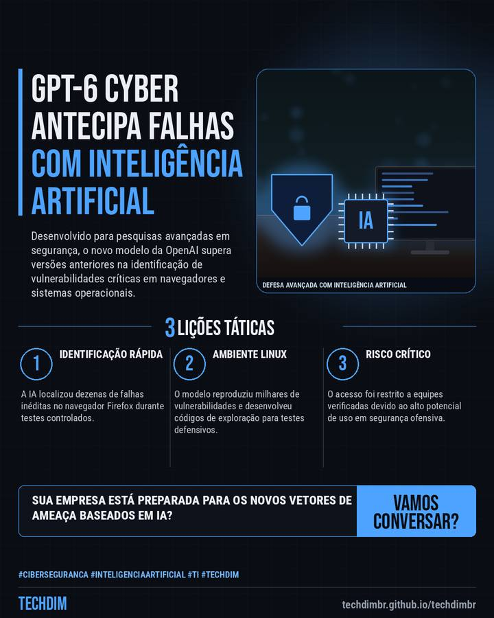

Notícia de tecnologia
GPT-6 Cyber: OpenAI lança IA para cibersegurança e detecção de falhas
Desenvolvido para pesquisas avançadas em segurança, o novo modelo da OpenAI supera versões anteriores na identificação de vulnerabilidades críticas em navegadores e sistemas operacionais.

Em resumo
- A OpenAI anunciou o GPT-6 Cyber, um modelo de inteligência artificial voltado para pesquisas avançadas em cibersegurança, testes de vulnerabilidade e correção de código.
- Durante testes da ferramenta, a IA identificou 81 vulnerabilidades inéditas no navegador Firefox e mapeou milhares de potenciais falhas no ecossistema Linux.
- Devido ao alto potencial de exploração de falhas em infraestruturas, a OpenAI elevou a classificação de risco do modelo para Crítica e restringiu seu acesso.
A TECHDIM monitora os avanços em IA e cibersegurança para manter sua infraestrutura corporativa sempre protegida.
Por que importa
Novas ferramentas de IA voltadas para segurança exigem atualização constante nas defesas corporativas.
O que fazer na prática
- Identificação rápida. A IA localizou dezenas de falhas inéditas no navegador Firefox durante testes controlados.
- Ambiente Linux. O modelo reproduziu milhares de vulnerabilidades e desenvolveu códigos de exploração para testes defensivos.
- Risco Crítico. O acesso foi restrito a equipes verificadas devido ao alto potencial de uso em segurança ofensiva.
Fontes consultadas
Mais do Radar de hoje
Leia também
Este texto resume as fontes citadas na data de publicação. Confira sempre o aviso oficial do fabricante antes de agir em produção.